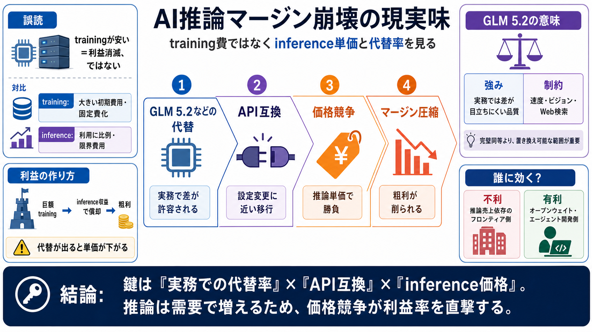

Z.ai GLM API Pricing: Full Breakdown of Costs (Jun 2026)
# Z.ai GLM API Pricing: Full Breakdown of Costs (Jun 2026). This guide covers what the Z.ai (GLM) API costs, what drives…

# Z.ai GLM API Pricing: Full Breakdown of Costs (Jun 2026). This guide covers what the Z.ai (GLM) API costs, what drives…
 [announced the immediate release of GLM-5.2](https://z.ai/blog/glm-5.…